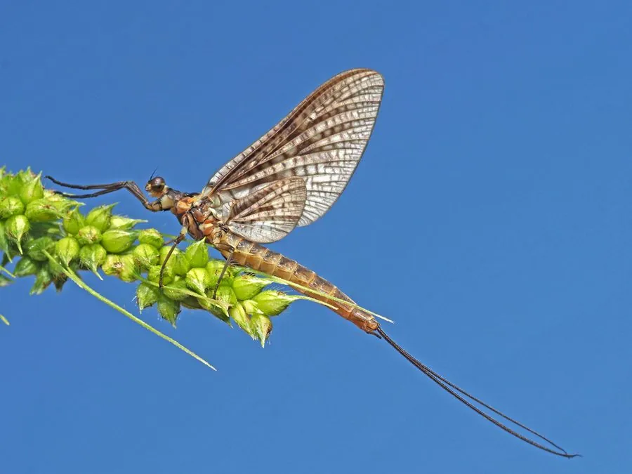

昆虫 · 动物界
蜉蝣2 Ephemera vulgata

幼虫在水中生活数年、成虫只能活几天的昆虫，成虫羽化后不饮不食，唯一的任务是交配繁殖，被称为“朝生暮死”的代表。
- 分类
- 门节肢动物门纲昆虫纲目蜉蝣目科蜉蝣科属蜉蝣属
- 栖息环境
- 河流、湖泊和池塘，幼虫生活在泥沙底质，成虫在水面上方活动
- 地理分布
- 欧洲和亚洲的淡水水域，中国多地有分布
- 保护级别
- 暂无评估
物种志
蜉蝣成虫体长 15–25 mm，体色黄褐或灰褐，翅透明、有细密的脉纹，停息时翅膀竖立在背上；后翅较小，尾须细长。它的身体柔软，飞行时姿态轻缓。
蜉蝣分布于欧洲和亚洲的河流湖泊。幼虫水生，生活在泥沙底质中，挖洞滤食有机碎屑，需要 1–2 年才能发育成熟。成虫羽化后不取食，寿命只有 1–3 天，成群在水面上方飞舞交配，把卵产在水中后死亡。因成虫阶段极短，蜉蝣常被用来形容“朝生暮死”。蜉蝣是水质监测的重要指示类群，幼虫对污染敏感，水体中蜉蝣种类多通常说明水质良好。目前它没有IUCN 的正式评估，中国未将其列入国家重点保护野生动物名录。
形态与习性
- 食性幼虫滤食有机碎屑，成虫不取食
- 体长15–25 mm
- 幼虫生活史幼虫水生，需 1–2 年完成发育
- 成虫寿命羽化后仅活 1–3 天
- 繁殖成群在水面上方飞舞交配，卵产在水中
- 水质指示幼虫对污染敏感，是水质监测的重要类群
趣味知识
- 蜉蝣的成虫不饮不食，寿命只有一到三天，因此有“朝生暮死”之说。
- 蜉蝣幼虫在水中要生活一到两年，成虫阶段反而极短。
- 傍晚时分，蜉蝣会成群在水面上方飞舞交配，形成“婚飞”现象。